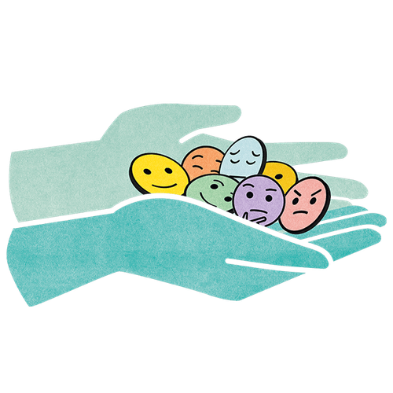

Mit der Academy erhaltet ihr im Business-Plan praxisnahe Lernmodule rund um Facilitation und wirksame Transformation.
Gemeinsam mit 9 Spaces zeigt Plan International Deutschland, wie wertebasiertes Arbeiten Orientierung gibt – nach innen wie nach außen.

Wie mitfühlend und ehrlich seid ihr, wenn ihr euch Feedback gebt? Dieses Tool hilft euch dabei, eure Feedback-Kultur zu verbessern.
Ein Tool, das dir dabei hilft, zu reflektieren, wie du kommunizierst
Gute Zusammenarbeit braucht regelmäßiges Feedback. So setzt ihr eine einfache Feedback-Routine auf.
Ein Tool, das dir dabei hilft, dein Selbstmitgefühl zu stärken und konstruktiv mit Fehlern umzugehen.